R无监督机器学习
Boylad · 2018-11-10
大多数情况下，非监督式学习关注两个方面：聚类和降维。聚类是把相似数据(距离相近)分到一个组(簇)的方法。聚类分析不使用任何标签信息，但是会使用数据特征之间的相似度，来把同类分到一组。降维是一种关注于去除不相关和多余数据来减少计算成本以及避免过拟合的技术；你可以把特征减少到一个更小的特征子集，而不会损失大量的信息。降维可以分成两部分：特征抽取和特征选取。特征抽取是使用低维空间来表示高维空间的技术。特征选取用来发现预测模型中最相关的变量。
使用层次聚类法对数据聚类
层次聚类法使用合并或分裂的方式来构建聚类的层次结构。不管采用哪一种方法，二者在刚开始时都要使用聚类相似度合并或者分裂聚类。整个递推过程一直走下去，直到有一个聚类或者无法分裂出更多的聚类。最终，我们可以使用树状图来表示聚类的层级。接下来，我们会展示如何使用层次聚类法聚合旅馆位置数据。
首先，加载数据：
setwd("C:\\Users\\Boylad\\Documents\\mydata\\R_for_Data_Science_Cookbook")
hotel <- read.csv("taipei_hotel.csv", header = TRUE)
str(hotel)
## 'data.frame': 102 obs. of 5 variables:
## $ address : chr "No.30 Youya Road, Beitou District, Taipei 11243, Taiwan " "No.28 Section 1, Minsheng East Road, Zhongshan District, Taipei 104, Taiwan " "No.3 Zhongshan Road, Beitou District, Taipei 11243, Taiwan " "No.18 Songgao Road, Xinyi District, Taipei 11073, Taiwan " ...
## $ lat : num 25.1 25.1 25.1 25 25.1 ...
## $ lon : num 122 122 122 122 122 ...
## $ title : chr "Grand View Resort Beitou" "YoMi Hotel" "Beitou Hot Spring Resort (Tian Yue Quan)" "Humble House Taipei" ...
## $ district: chr "Beitou" "Zhongshan" "Beitou" "Xinyi" ...可以根据经纬度可视化数据集：
plot(hotel$lon, hotel$lat, col = factor(hotel$district))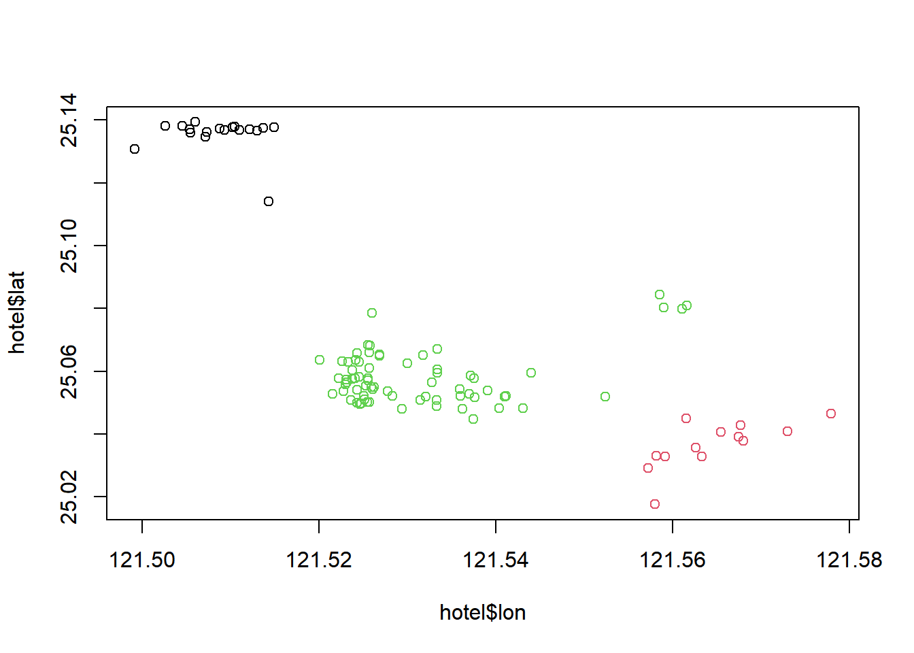
使用合并层次聚类法聚类旅馆的地理数据：
#计算欧式距离choose(102,2)
hotel.dist <- dist(hotel[,c("lat", "lon")], method = "euclidean")
#使用ward最小方差法进行合并聚类
hc <- hclust(hotel.dist, method = "ward.D2")
hc
##
## Call:
## hclust(d = hotel.dist, method = "ward.D2")
##
## Cluster method : ward.D2
## Distance : euclidean
## Number of objects: 102使用plot()函数绘制树状图(hang以便在树状图底部展示标签，cex让标签缩小到原来的70%)。
plot(hc, hang = -0.01, cex = 0.7)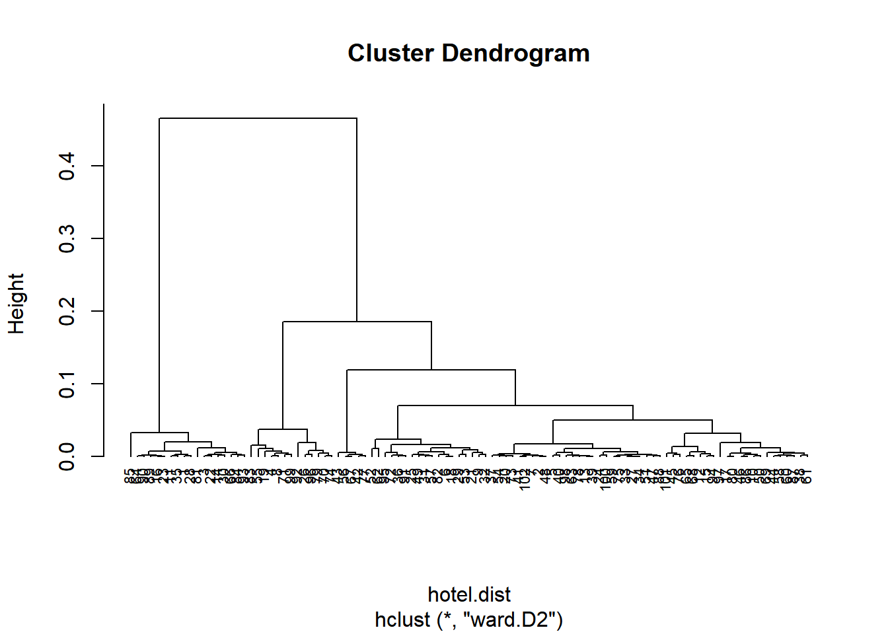
另外，你可以使用single方法来执行层次聚类，看看生成的树状图与之前的有什么不同：
hc2 <- hclust(hotel.dist, method = "single")
plot(hc2, hang = -0.01, cex = 0.7)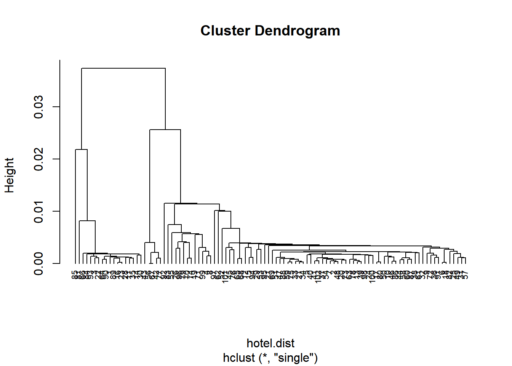
层次聚类法是试图迭代地构建聚类层级的一种技术，通常，有以下两种方法：
合并层次聚类：这是一种自底向上的方法。每个观察从自身的聚类开始。我们可以计算每个聚类的相似度(距离)，并在每一次迭代中合并最相似的两类，直到只有一个聚类。
分裂层次聚类：这是一种自顶向下的方法。所有的观察都始于一个聚类，然后我们迭代地分裂出两个最不相似的聚类，直到每一个观察有一个聚类。在执行层次聚类之前，我们需要确定两个聚类的相似程度。常用的用于相似度量的距离函数：
单连接：每个聚类点中两个点的最短距离。 \[dist(C_i,C_j)=\min_{{a\in C_i, b\in C_j}} dist(a,b)\]
全连接：每个聚类中两个点的最长距离。 \[dist(C_i,C_j)=\max_{{a\in C_i, b\in C_j}} dist(a,b)\]
平均链接：每个聚类中两个点的平均距离(其中，\(|C_i|\)是聚类\(C_i\)的大小，\(|C_j|\)是聚类\(C_j\)的大小)。\[dist(C_i,C_j)=\frac{1}{|C_i||C_j|}\sum_{a\in C_i, b\in C_j} dist(a,b)\]
Ward法：每个点到聚类的平均位置的距离平方和(其中，\(\mu\)是\(C_i\bigcup C_j\)的平均向量)。 \[dist(C_i,C_j)=\frac{1}{|C_i||C_j|}\sum_{a\in C_i, b\in C_j}||a-\mu||\]
切割树成聚类
在树状图中，我们可以看到聚类的层级结构，但是我们还没有把数据分到不同的组中。我们可以判断树状图中有多少聚类，并按照一定的高度把树切分开来，以便把数据分到不同的组中。接下来我们使用函数cutree来把数据分到给定数目的聚类中。
首先，把数据分成3组，并查看数据的聚类标签(大部分数据点位于聚类2中)：
fit <- cutree(hc, k = 3)
fit
## [1] 1 2 1 3 2 2 2 3 2 2 1 2 2 1 2 1 2 2 3 2 2 1 1 2 2 3 2 1 2 1 2 2 2 2 1 2 2
## [38] 2 2 2 2 2 2 2 2 2 2 2 2 2 2 2 2 2 3 2 2 2 2 2 2 2 2 1 2 1 2 2 2 3 3 2 2 3
## [75] 2 2 2 2 3 2 1 2 3 1 1 2 2 2 1 1 2 3 1 2 2 3 2 2 3 2 2 2确定每一个聚类中的数据点的个数：
table(fit)
## fit
## 1 2 3
## 18 71 13使用生成的聚类信息，绘制散点图：
plot(hotel$lon, hotel$lat, col = fit)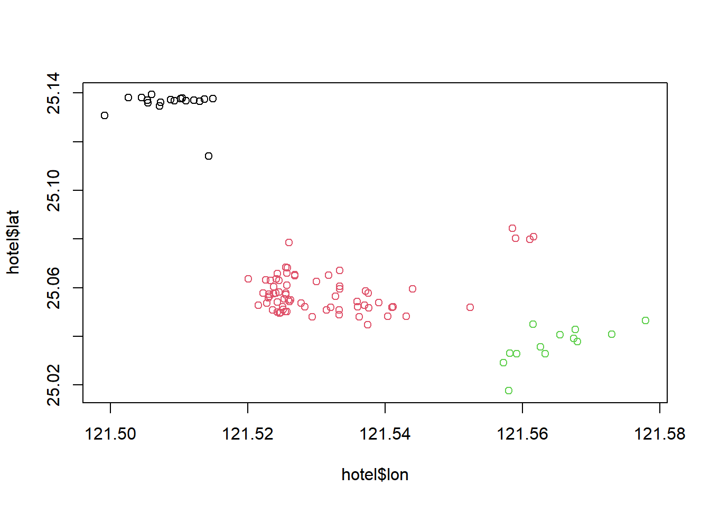
可以通过红色矩形，可视化分组数据：
plot(hc)
rect.hclust(hc, k = 3, border = "red")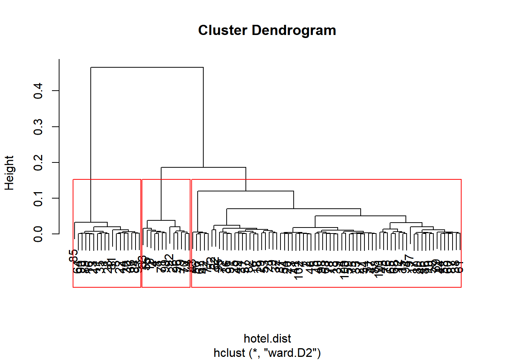
除了给所有层次聚类绘制矩形框，我们还可以为特定的聚类绘制红色矩形框：
plot(hc)
rect.hclust(hc, k = 3, which = 2, border = "red")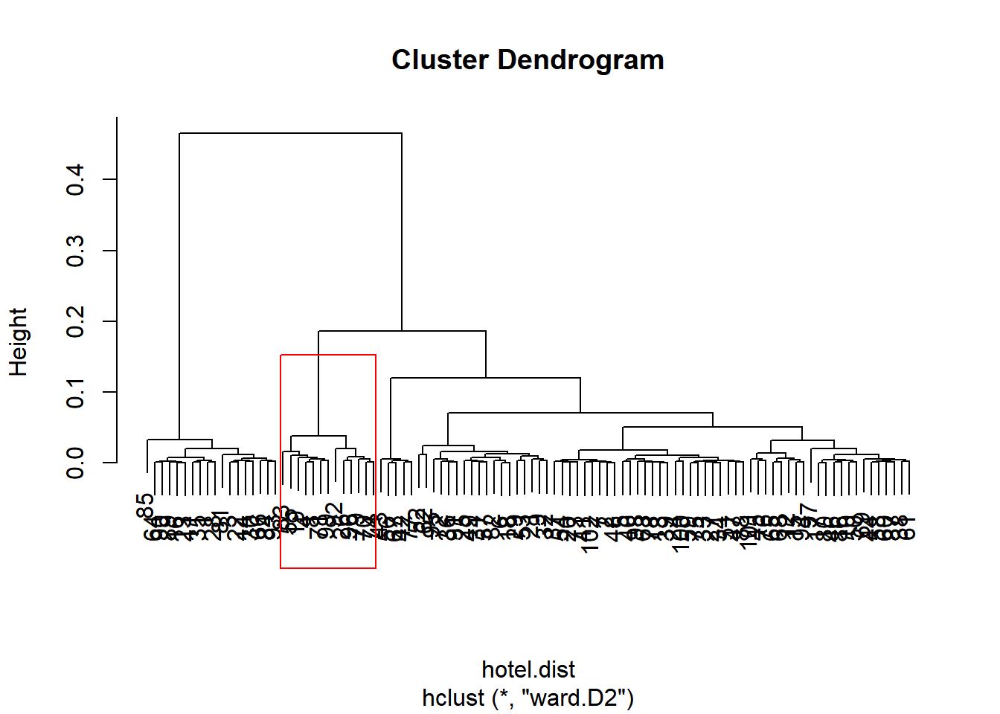
使用K-means方法对数据聚类
K-means聚类法是一种划分聚类的方法。算法的目的是把n个对象化分成k个聚类，每个对象都属于一个拥有最近平均值的聚类。不像层次聚类算法不需要用户指定聚类数目，k-means方法首先需要给出这个数目。然而，K-means聚类要比层次聚类法快很多，因为构建层次树很耗时。接下来我们展示如何在旅馆位置数据集上执行K-means聚类。
首先，使用K-means来聚类客户数据：
set.seed(22)
fit <- kmeans(hotel[,c("lon","lat")], 3) #K-mans需要用户输入聚类数目k
fit
## K-means clustering with 3 clusters of sizes 18, 19, 65
##
## Cluster means:
## lon lat
## 1 121.5087 25.13559
## 2 121.5627 25.04905
## 3 121.5290 25.05657
##
## Clustering vector:
## [1] 1 3 1 2 3 3 3 2 3 3 1 3 3 1 3 1 3 3 2 3 3 1 1 3 3 2 3 1 3 1 3 3 3 3 1 3 3
## [38] 3 3 3 3 2 2 3 3 3 3 3 3 3 3 3 3 3 2 2 3 3 3 3 3 2 3 1 3 1 2 3 3 2 2 3 3 2
## [75] 3 3 2 3 2 3 1 3 2 1 1 3 3 3 1 1 3 2 1 3 3 2 3 3 2 3 3 3
##
## Within cluster sum of squares by cluster:
## [1] 0.0008661602 0.0085979703 0.0050881876
## (between_SS / total_SS = 89.6 %)
##
## Available components:
##
## [1] "cluster" "centers" "totss" "withinss" "tot.withinss"
## [6] "betweenss" "size" "iter" "ifault"绘制数据散点图，并根据聚类给数据上色：
plot(hotel$lon, hotel$lat, col = fit$cluster)K-means算法的目标是最小化组内平方和(Within-Cluster Sum of Squares, WCSS)。假设\(x\)是给定观察的集合，\(S=S_1,S_2,\cdots S_k\)表示\(k\)个划分，\(\mu_i\)是\(S_i\)的平均值，我们可以使用下列公式计算WCSS： \[f=\sum_{i=1}^k\sum_{x\in S_i}||x-\mu_i||^2\] K-means聚类法的过程具体如下：
确定聚类数目k。
随机创建k个划分。
计算每个划分的中心。
把每个对象关联到最近的聚类中心上。
重复步骤2、3、4直到WCSS改变很小(或者被最小化)
K-means聚类中，可以指定算法来进行聚类分析。可以使用Hartigan-Wong、Lloyd、Forgy或者MacQueen作为聚类算法。
使用基于密度的方法对数据聚类
作为距离度量的一种备选方案，可以使用基于密度的度量来聚类数据。这个方法可以发下某些区域比别的区域密度更高。最著名的方法是DBSCAN。
首先，加载装dbscan程序包：
library(dbscan)根据密度度量聚类数据：
#可达距离0.01，最小可达点数3
fit <- dbscan(hotel.dist, eps = 0.01, minPts = 3)
fit
## DBSCAN clustering for 102 objects.
## Parameters: eps = 0.01, minPts = 3
## The clustering contains 4 cluster(s) and 3 noise points.
##
## 0 1 2 3 4
## 3 17 65 12 5
##
## Available fields: cluster, eps, minPts不同聚类对应不同的颜色，在散点图中绘制数据：
plot(hotel$lon, hotel$lat, col = fit$cluster)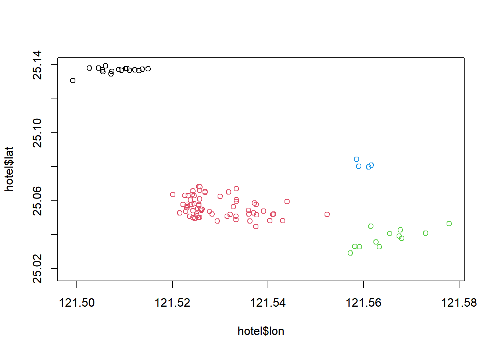
也可以用dbscan类预测数据点属于哪一个聚类。在本例中，首先创建名为newdata的数据框：
newdata <- data.frame(lon = 121.51, lat = 25.13)你可以预测数据属于哪一个类：
predict(fit, hotel[,c("lon", "lat")], newdata)
## [1] 1 0 1 0 0 0 0 0 0 0 1 0 0 1 0 1 0 0 0 0 0 1 1 0 0 0 0 1 0 1 0 0 0 0 1 0 0
## [38] 0 0 0 0 0 0 0 0 0 0 0 0 0 0 0 0 0 0 0 0 0 0 0 0 0 0 1 0 0 0 0 0 0 0 0 0 0
## [75] 0 0 0 0 0 0 0 0 0 0 0 0 0 0 1 1 0 0 1 0 0 0 0 0 0 0 0 0基于密度的聚类使用密度可达和密度相连的思想。这是一种在非线性形状中发现聚类的很有用的方法。基于密度的聚类使用两个参数：Eps和MinPts。Eps表示临近点的最大半径，MinPts表示Eps-邻域中最少点个数。使用这两个参数我们可以定义一个核心点，其拥有比Eps半径内的MinPts多的点。而且我们可以定义一个内部点，其拥有比MinPts少的点，但是它是位于核心点的邻域内部。如果p的Eps-邻域中点的个数大于MinPts,我们可以定义其为核心点。
而且，我们还需要定义两点之间的可达和相连关系。如果q在p的邻域内部，并且p是一个核心点，那么我们说p到另一个点q是直接密度可达的。进而，如果存在一个点链\(p_1,P_2,\cdots ,p_n\),其中，\(p_1=q\),\(P_n=p\)，其\(p_{i+1}\)与\(p_i\)以Eps和MinPts直接密度可达，\(1\le i\le n\)，那么我们可以定义p和q是原生密度可达。
根据密度聚类的基础概念，我们可以展示DBSCAN的过程，最常用的基于密度的聚类过程如下：
随机选取一个点p。
设定Eps和MinPts，获取p的所有密度可达的点。
如果p是一个核心点，那么聚类就形成了。否则，p如果是一个内部的点，且任何点与p都不是密度可达的，该过程会把点标记为噪点，并继续访问下一个点。
重复上述过程，直到访问了所有的点。
从聚类中抽取轮廓信息
轮廓信息是验证数据聚类的一种评估方法。聚类的度量涉及每个聚类中数据的紧密程度计算，以及不同聚类之间疏远的度量。轮廓系数结合了聚类内的距离度量和聚类间的距离度量。输出值在0到1之间：越靠近1，聚类效果越好。
library(cluster)使用kmeans生成一个kmeans对象km:
km <- kmeans(hotel[,c("lat", "lon")], 3)计算轮廓信息(它给出了聚类的大小、平均轮廓宽度和个体轮廓宽度，轮廓系数越靠近1，聚类质量越好)：
hotel.dist <- dist(hotel[,c("lat", "lon")], method = "euclidean")
kms <- silhouette(km$cluster, hotel.dist)
summary(kms)
## Silhouette of 102 units in 3 clusters from silhouette.default(x = km$cluster, dist = hotel.dist) :
## Cluster sizes and average silhouette widths:
## 14 70 18
## 0.6643887 0.6248553 0.9025288
## Individual silhouette widths:
## Min. 1st Qu. Median Mean 3rd Qu. Max.
## 0.1102 0.6302 0.7143 0.6793 0.7518 0.9385绘制轮廓信息(左边展示了水平线的数量，其代表了聚类的数量。右边表示图自身的平均相似度减去到下一个聚类的平均相似度。平均轮廓宽度在图的底部给出)：
plot(kms)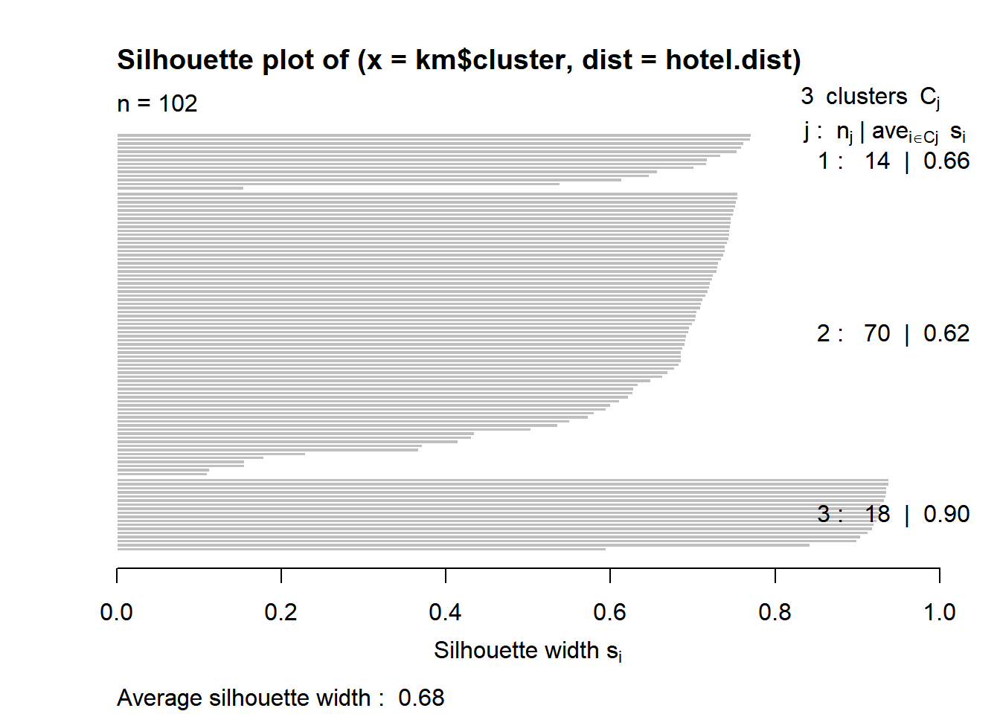
轮廓是一种聚类度量，它同时考虑聚类内部相关对象的联系有多紧密，以及聚类之间分离有多疏远。从数学上讲，我们可以为每一个点x定义轮廓的宽度，如下： \[Silhouette(x)=\frac{b(x)-a(x)}{max[b(x)-a(x)]}\] 在上述公式中，\(a(x)\)是聚类内所有点的平均距离，\(b(x)\)是x到其他聚类平均距离的最小值。
比较多中聚类方法
使用不同的聚类方法，数据可以分成几类。之后，你可能希望度量一下不同聚类的准确性。在多数情况下，你可能要么使用聚类内部度量，要么使用聚类间度量。现在我们介绍如何使用fpc程序包中的cluster.stats比较不同的聚类方法。
使用单连接法进行层次聚类，把客户数据分组，生成对象hc_single:
library(fpc)
##
## 载入程辑包：'fpc'
## The following object is masked from 'package:dbscan':
##
## dbscan
hotel.dist <- dist(hotel[,c("lat", "lon")], method = "euclidean")
single_c <- hclust(hotel.dist, method = "single")
hc_single <- cutree(single_c, k = 3)使用全连接法进行层次聚类，把旅馆位置数据分组，生成对象hc_complete:
complete_c <- hclust(hotel.dist, method = "complete")
hc_complete <- cutree(complete_c, k = 3)使用K-means聚类法聚类数据，生成对象km:
set.seed(22)
km <- kmeans(hotel[,c("lon", "lat")], 3)然后，获取任意聚类方法的聚类验证检验信息：
cs <- cluster.stats(hotel.dist, km$cluster)通常，我们主要使用within.cluster.ss和avg.silwidth来验证聚类方法(within.cluster.ss代表聚类内距离平方和，avg.silwidth代表平均轮廓宽度，并且，within.cluster.ss给出了相关对象在聚类内部的紧密程度，值越小，这些对象在聚类内部越紧密。)：
cs[c("within.cluster.ss", "avg.silwidth")]
## $within.cluster.ss
## [1] 0.01455232
##
## $avg.silwidth
## [1] 0.6841843最后，我们可以生成每一个聚类方法的统计信息，并在表中列出(可以看到，全连接层次聚类在within.cluster.ss和avg.silwidth方面要优于单连接层次聚类和K-means聚类)：
sapply(list(kmeans = km$cluster, hc_single = hc_single,
hc_complete = hc_complete), function(c) cluster.stats(hotel.dist, c)
[c("within.cluster.ss", "avg.silwidth")])
## kmeans hc_single hc_complete
## within.cluster.ss 0.01455232 0.02550912 0.01484059
## avg.silwidth 0.6841843 0.5980621 0.6838705K-means函数也可以输出统计信息，进而支持用户验证聚类方法：
set.seed(22)
km <- kmeans(hotel[,c("lon", "lat")], 3)
km$withinss
## [1] 0.0008661602 0.0085979703 0.0050881876
km$betweenss
## [1] 0.1256586基于密度的聚类识别数字
我们已经介绍了基于密度的聚类方法，它在聚类特定形状数据方面尤为出色。在本教程中，我们会展示如何使用DBSCAN识别数字，聚类的目的是把1和7区分到不同的聚类中，我们使用K-means和DBSCAN两个方法进行聚类。
首先，加载png程序包：
library(png)从handwriting.png中读取图像，并把读取的数据转换为散点图(PNG文件是\(28\times28\)像素):
setwd("C:\\Users\\Boylad\\Documents\\mydata\\R_for_Data_Science_Cookbook")
img2 <- readPNG("handwriting.png", TRUE)
img3 <- img2[,nrow(img2):1]
b <- cbind(as.integer(which(img3 < -1) %% 28), which(img3 < -1) / 28)
plot(b, xlim = c(1, 28), ylim = c(1, 28))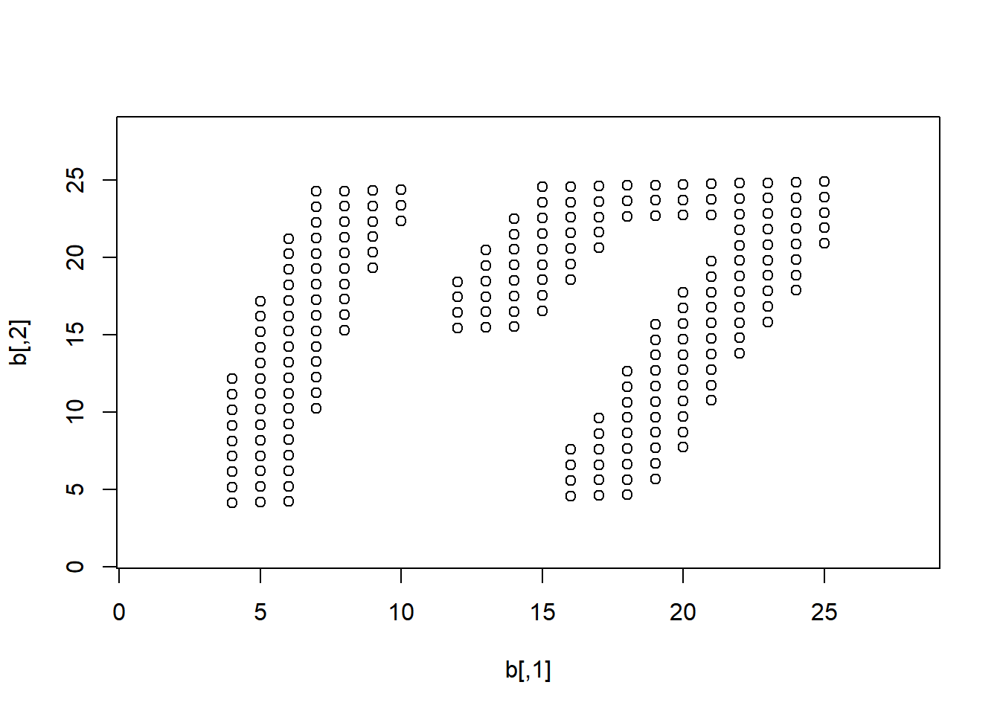
在手写数字上执行k-means聚类法(k=2)：
set.seed(18)
fit <- kmeans(b, 2)
plot(b, col = fit$cluster, xlim = c(1, 28), ylim = c(1, 28))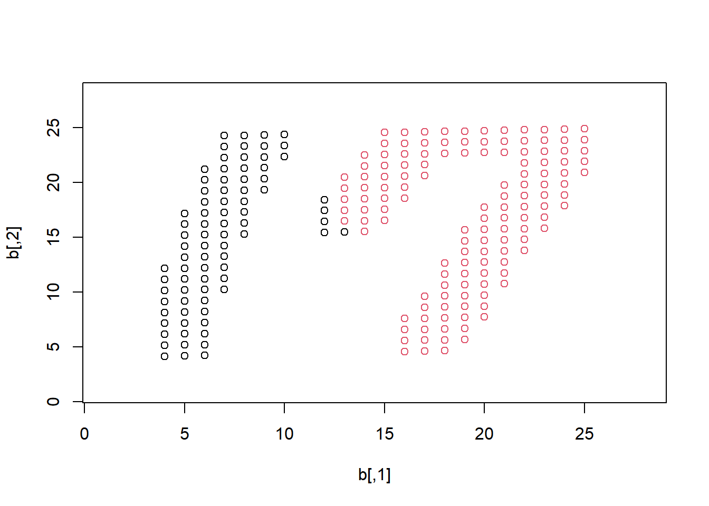
然后，在手写数字上执行DBSCAN聚类法：
ds <- dbscan(b, 2)
ds
## dbscan Pts=212 MinPts=5 eps=2
## 1 2
## seed 75 137
## total 75 137
plot(ds, b, xlim = c(1, 28), ylim = c(1, 28))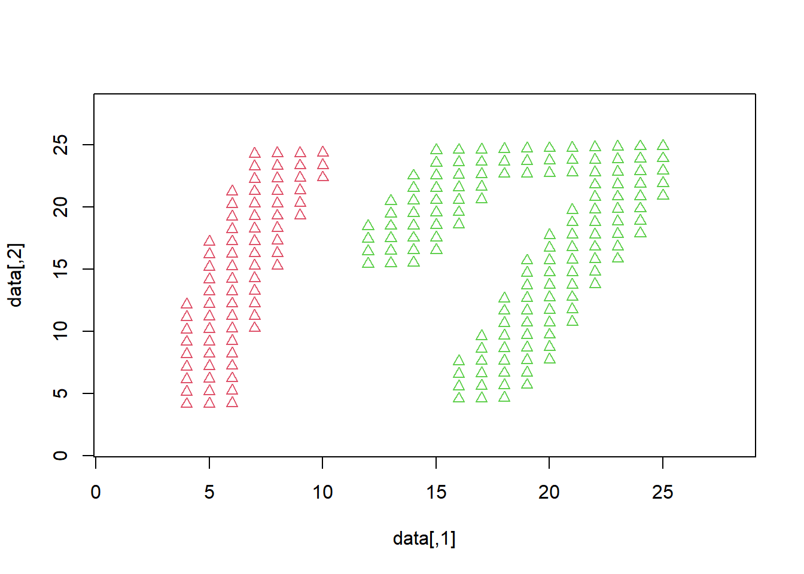
使用K-means聚类方法分组相似文本文档
计算机程序在理解给定语句的含义方面存在着不足。因此，计算机并不知道如何根据文本相似度类来对文档分组。然而，如果我们可以把句子转变为数学矩阵(文档项矩阵)，程序就可以计算每个文档之间的距离，并把相似的文档分在一起。接下来，我们使用K-means法聚类相似文本文档。
首先，加载tm和SnowballC程序包(tm包是一个文本挖掘程序包，SnowballC是一个词干提取工具。tm程序包需要一个结构语料库来管理文本文档，，因此，我们把文本文档中输入的句子转换为语料库doc.corpus)：
library(tm)
## 载入需要的程辑包：NLP
library(SnowballC)读取从互联网中收集的新闻标题：
setwd("C:\\Users\\Boylad\\Documents\\mydata\\R_for_Data_Science_Cookbook")
load("news.RData")把加载时文本文档转变为语料库：
doc.vec <- VectorSource(news)
doc.corpus <- VCorpus(doc.vec)对文本文档进行清理，去除停用词、标点符号，并对文档进行词干提取：
doc.corpus <- tm_map(doc.corpus, removePunctuation)
doc.corpus <- tm_map(doc.corpus, removeNumbers)
doc.corpus <- tm_map(doc.corpus, removeWords, stopwords("english"))
doc.corpus <- tm_map(doc.corpus, stemDocument)接着，把语料库转变为一个文档项矩阵(文档项矩阵的行是文档，列是词项。矩阵中的值表示每一个文档中词项出现的计数。使用函数inspect我们发现词项agent在文档中出现了一次)：
dtm <- DocumentTermMatrix(doc.corpus)
inspect(dtm[1:3,1:3])
## <<DocumentTermMatrix (documents: 3, terms: 3)>>
## Non-/sparse entries: 1/8
## Sparsity : 89%
## Maximal term length: 7
## Weighting : term frequency (tf)
## Sample :
## Terms
## Docs adviser agent anoth
## 1 0 1 0
## 2 0 0 0
## 3 0 0 0最后，在文档项矩阵dtm的距离上执行K-means聚类(分成3组)：
set.seed(123)
fit <- kmeans(dist(dtm), 3)
fit
## K-means clustering with 3 clusters of sizes 8, 8, 8
##
## Cluster means:
## 1 2 3 4 5 6 7 8
## 1 2.716726 3.533405 3.806184 3.672339 3.237601 3.772755 3.060495 3.869742
## 2 3.786072 3.252011 3.547263 3.402887 2.926557 3.547263 3.948523 2.856986
## 3 3.599916 2.324264 2.469012 2.376606 2.031617 2.552871 3.736639 3.457711
## 9 10 11 12 13 14 15 16
## 1 3.637644 3.935464 3.637644 4.299983 2.719962 3.935464 2.648812 3.117387
## 2 2.620523 2.856986 3.402887 3.009535 3.819501 3.685923 3.685923 3.881535
## 3 3.153742 3.457711 2.462619 3.868477 3.599916 2.639420 3.457711 3.736639
## 17 18 19 20 21 22 23 24
## 1 3.129522 3.160433 3.672339 3.117387 3.672339 3.806184 3.806184 3.935464
## 2 3.819501 4.073427 2.703986 3.948523 3.402887 2.784304 2.822032 2.936445
## 3 3.599916 3.868477 3.153742 3.668516 2.462619 3.309292 3.309292 3.457711
##
## Clustering vector:
## 1 2 3 4 5 6 7 8 9 10 11 12 13 14 15 16 17 18 19 20 21 22 23 24
## 1 3 3 3 3 3 1 2 2 2 3 2 1 3 1 1 1 1 2 1 3 2 2 2
##
## Within cluster sum of squares by cluster:
## [1] 102.85278 80.24501 62.43151
## (between_SS / total_SS = 33.0 %)
##
## Available components:
##
## [1] "cluster" "centers" "totss" "withinss" "tot.withinss"
## [6] "betweenss" "size" "iter" "ifault"
news[fit$cluster == 1]
## [1] "2010 NBA free agents: LeBron James to CNN: Cleveland Cavaliers"
## [2] "Coveted NBA free agent Kevin Durant opts for Golden State "
## [3] "Game 7: Lebron James guides Cavaliers to NBA title win"
## [4] "Lebron James guides Cavaliers to NBA title win"
## [5] "LeBron James Talks NBA Racism, Ferguson & Ray Rice On CNN"
## [6] "NBA free agents: TV riches drive huge new contracts"
## [7] "NBA Star Free Agent Kevin Durant Chooses Golden State Warriors"
## [8] "The Crying Game: LeBron James and Cavs get emotional after NBA"使用主成分分析法进行数据降维
主成分分析法(PCA)是处理降维数据问题最常用的线性方法。当数据拥有许多特征并且特征之间有冗余(关联)时，PCA会很有用。为了去除多余特征，PCA把特征减少为少量主要成分的集合，进而将高维数据映射到低维数据。这些主要成分包含了原始特征的大部分变化。
首先，加载经济自由数据集：
setwd("C:\\Users\\Boylad\\Documents\\mydata\\R_for_Data_Science_Cookbook")
eco.freedom <- read.csv("index2015_data.csv", header = TRUE)除去经济自由数据集的前几列：
eco.measure <- eco.freedom[,5:14]在eco.measure数据上执行PCA(通过设置center=TRUE转换为零中心，通过选项scale=TRUE变换范围为单元方差。标准差是协方差/关 联矩阵的特征值平方根，主成份旋转是输入特征线性组合的系数。例如PC1=Property.Rights*0.39679243+Freedom.from.Corruption*0.38401793…。我们发现Property.Rights特征对PCI贡献最大，因为它的系数最大。)：
#stat包中的prcomp函数
eco.pca <- prcomp(eco.measure, center = TRUE, scale = TRUE)
eco.pca
## Standard deviations (1, .., p=10):
## [1] 2.2437007 1.3067890 0.9494543 0.7947934 0.6961356 0.6515563 0.5674359
## [8] 0.5098891 0.4015613 0.2694394
##
## Rotation (n x k) = (10 x 10):
## PC1 PC2 PC3 PC4
## Property.Rights 0.39679243 -0.170218166 0.03192289 -3.255851e-01
## Freedom.from.Corruption 0.38401793 -0.198468352 0.10970569 -2.624054e-01
## Fiscal.Freedom -0.02312696 0.672078361 0.12356820 1.857558e-01
## Gov.t.Spending -0.11741108 0.560289663 -0.32662142 -6.123599e-01
## Business.Freedom 0.36957438 0.062773180 0.25504412 9.317934e-05
## Labor.Freedom 0.21182699 0.269067281 0.74666518 -1.309875e-01
## Monetary.Freedom 0.31150727 0.246661629 -0.22017329 2.082905e-01
## Trade.Freedom 0.33282176 0.168103471 -0.15724401 5.814415e-01
## Investment.Freedom 0.38065185 0.009411043 -0.30530801 -6.665751e-02
## Financial.Freedom 0.38289286 0.022254915 -0.27572379 -1.121949e-01
## PC5 PC6 PC7 PC8
## Property.Rights 0.12209932 -0.23510676 -0.042071947 0.26032864
## Freedom.from.Corruption 0.14999861 -0.32485796 0.061594766 0.42503956
## Fiscal.Freedom 0.43504689 -0.21846120 -0.461144212 0.14933151
## Gov.t.Spending -0.03426519 0.05952701 0.427245867 0.03849731
## Business.Freedom 0.36260122 -0.16355425 0.330869797 -0.72481715
## Labor.Freedom -0.39758062 0.36536390 -0.009394023 0.10651891
## Monetary.Freedom -0.65372952 -0.53087803 -0.083446812 -0.14437544
## Trade.Freedom 0.12183097 0.24018433 0.527873919 0.37201725
## Investment.Freedom -0.12410847 0.41359732 -0.236868498 -0.15747252
## Financial.Freedom 0.15809582 0.34219855 -0.384654417 -0.08392587
## PC9 PC10
## Property.Rights -0.006390731 0.752855563
## Freedom.from.Corruption 0.135518659 -0.633560144
## Fiscal.Freedom 0.159564689 0.024405502
## Gov.t.Spending -0.033196941 -0.027985890
## Business.Freedom 0.018451059 -0.031968606
## Labor.Freedom -0.071187110 0.001499968
## Monetary.Freedom -0.112519479 -0.024454180
## Trade.Freedom -0.052520971 0.076377525
## Investment.Freedom 0.699762750 -0.017931796
## Financial.Freedom -0.666735245 -0.150512070获取PCA结果的汇总统计信息(第1行展示了每一个主要成分的标准差，第2行展示了能够被每一个成分解释的方差比例，第3行展示了被解释方差的整体比例。)：
summary(eco.pca)
## Importance of components:
## PC1 PC2 PC3 PC4 PC5 PC6 PC7
## Standard deviation 2.2437 1.3068 0.94945 0.79479 0.69614 0.65156 0.5674
## Proportion of Variance 0.5034 0.1708 0.09015 0.06317 0.04846 0.04245 0.0322
## Cumulative Proportion 0.5034 0.6742 0.76434 0.82751 0.87597 0.91842 0.9506
## PC8 PC9 PC10
## Standard deviation 0.5099 0.40156 0.26944
## Proportion of Variance 0.0260 0.01613 0.00726
## Cumulative Proportion 0.9766 0.99274 1.00000最后使用函数predict输出主要成分的值，显示数据第一行(输入数据集的第1行，得到10个主要成分。)：
predict(eco.pca, newdata = head(eco.measure, 1))
## PC1 PC2 PC3 PC4 PC5 PC6 PC7
## 1 0.7042915 1.294181 -1.245911 0.726478 0.3089492 0.5121069 -0.07302236
## PC8 PC9 PC10
## 1 -0.4793749 -0.3758371 -0.1154001由于特征选取会移除一些关联的但是信息丰富的特征，我们不得不考虑使用特征抽取的方法把关联的特征合并成一个特征。PCA就是一种特征抽取的方法，我们使用正交变换把可能关联的特征转换为主要成分。而且，我们可以使用这些主要成分来确定变化的方向。PCA过程包含以下几个步骤：
找出平均向量\(\mu=\frac{1}{n}\displaystyle{\sum_{i=1}^n}x_i\)，其中\(x_i\)表示数据点，\(n\)表示点的个数。
使用下列等式计算协方差矩阵。 \[c=\frac{1}{n}\displaystyle\sum_{i=1}^n(x_i-\mu)(x_i-\mu)^T\]
计算特征向量\(\phi\)和对应的特征值。
排序，并挑选前k个特征向量。
构建一个\(d\times k\)维的特征矩阵U，其中，d是初始维度，k是特征向量维度。
最后，使用等式\(y=U^Tx\)把数据样本转换为新的子空间。
使用陡坡图确定主成分数量
由于我们只需要保留导致原始特征大部分方差的主要成分，所以我们既可以使用Kaiser方法、陡坡图，也可以使用被解释变动的比例作为选取的标准。陡坡图的主要目的是画出成分分析结果，并找到斜率明显变化(肘部)的地方。
首先，使用screeplot生成柱状图：
screeplot(eco.pca, type = "barplot")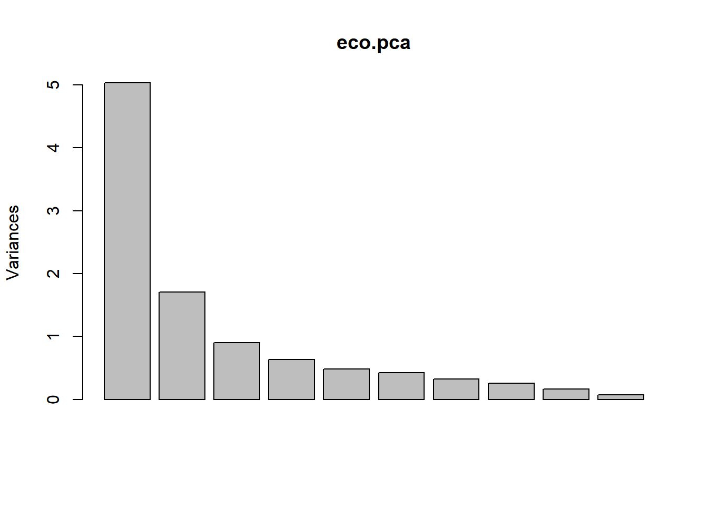
也可以使用screeplot生成线状图：
screeplot(eco.pca, type = "line")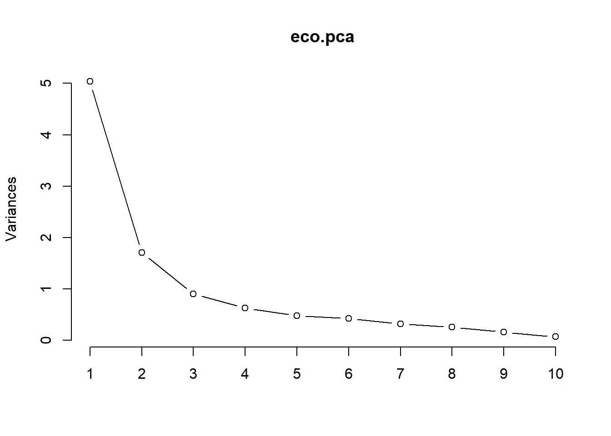
在陡坡图中，有两种图形，即柱状图和线状图。正如两种陡坡图所展示的，斜率的明显变化(所谓的肘部或者膝盖)发生在成分3的地方。所以我们保留成分1和成分2，二者在成分3之前都使用较陡的曲线，从成分3以后曲线开始平缓。然而，这种方法有歧义。
默认情况下，如果对主成份对象使用函数plot，也可以得到陡坡图，这一点可以参阅screeplot的帮助文档。另外的另外，也可以使用nfactors来执行并分析Cattell陡坡图的非图形化解决方案：
library(nFactors)
## 载入需要的程辑包：lattice
##
## 载入程辑包：'nFactors'
## The following object is masked from 'package:lattice':
##
## parallel
ev <- eigen(cor(eco.measure)) #eigen()矩阵的谱分解
ap <- parallel(subject = nrow(eco.measure), var = ncol(eco.measure),
rep = 100, cent = .05)
nS <- nScree(x=ev$values, aparallel = ap$eigen$qevpea)
plotnScree(nS)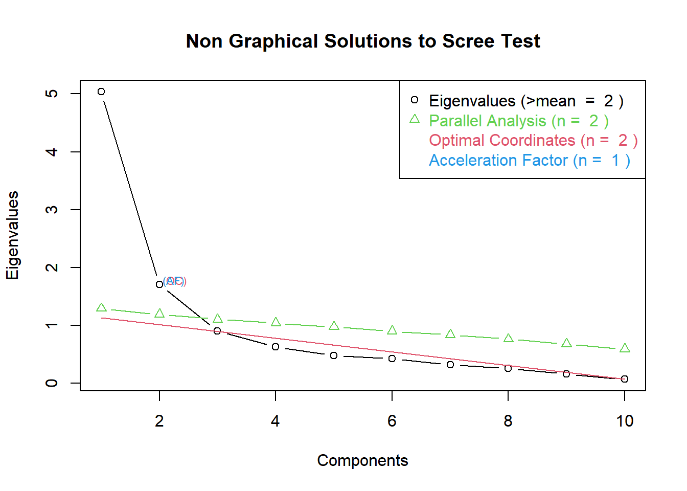
使用Kaiser方法确定主成份数量
这个方法的选取标准保留了大于1的特征值。首先，从eco.pca获取标准差：
eco.pca$sdev
## [1] 2.2437007 1.3067890 0.9494543 0.7947934 0.6961356 0.6515563 0.5674359
## [8] 0.5098891 0.4015613 0.2694394然后，从eco.pca获取方差：
eco.pca$sdev^2
## [1] 5.0341927 1.7076975 0.9014634 0.6316965 0.4846048 0.4245256 0.3219835
## [8] 0.2599869 0.1612515 0.0725976选取方差大于1的成分：
which(eco.pca$sdev ^ 2 > 1)
## [1] 1 2可以使用陡坡图选取方差大于1的成分：
screeplot(eco.pca, type = "line")
abline(h = 1, col = "red", lty = 3)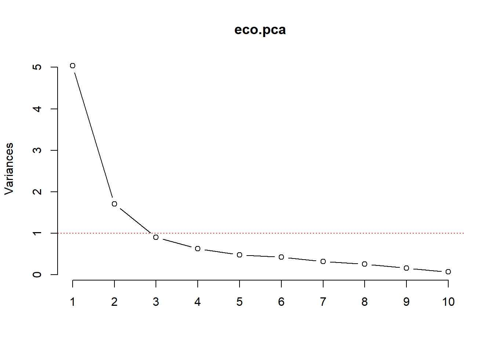
使用双标图可视化多变元数据
为了发现数据和变量是如何通过主成份进行映射的，你可以使用biplot，它可以把原始特征的数据和投影绘制到两个成分上。
使用成分1和成分2创建一个散点图：
plot(eco.pca$x[,1], eco.pca$x[,2], xlim = c(-6, 6), ylim = c(-4, 3))
text(eco.pca$x[,1], eco.pca$x[,2], eco.freedom[,2], cex = 0.7,
pos = 4, col = "red")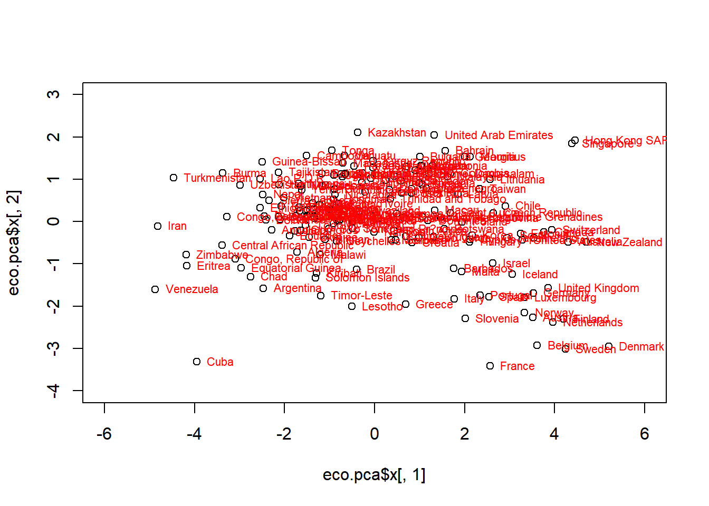
以上内容整理自《R for Data Science Cookbook》